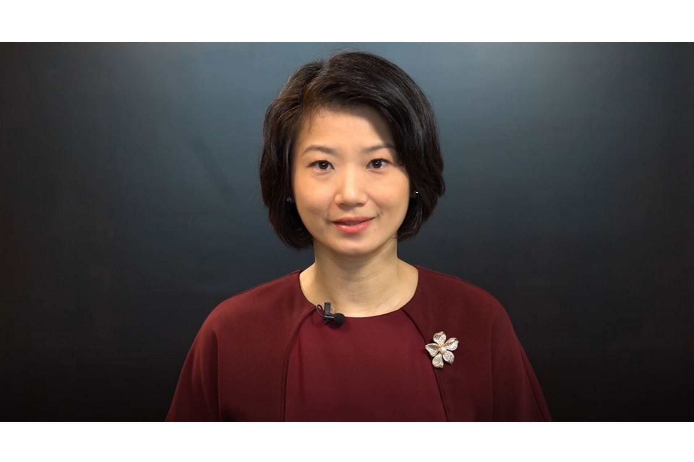

Mr Teo Chee Hean
Senior Minister and Coordinating Minister for National Security First Advisor
Pasir Ris - Punggol Town Council
Mr Sharael Taha
Chairman
Pasir Ris - Punggol Town Council
Dr Janil Puthucheary
Senior Minister of State, Ministry of Communications and Information & Ministry of Health Government Whip Vice-Chairman
Pasir Ris - Punggol Town Council

Ms Sun Xueling
Minister of State, Ministry of Home Affairs & Ministry of Social and Family Development Vice-Chairman of Pasir Ris - Punggol Town Council

Mr Desmond Tan
Minister of State, Prime Minister's Office Elected Member
Pasir Ris - Punggol Town Council
Ms Yeo Wan Ling
Elected Member
Pasir Ris - Punggol Town Council